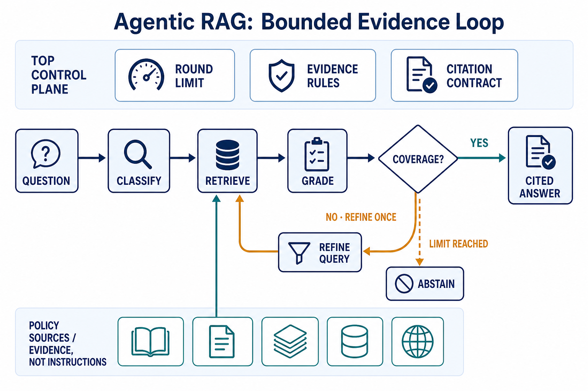
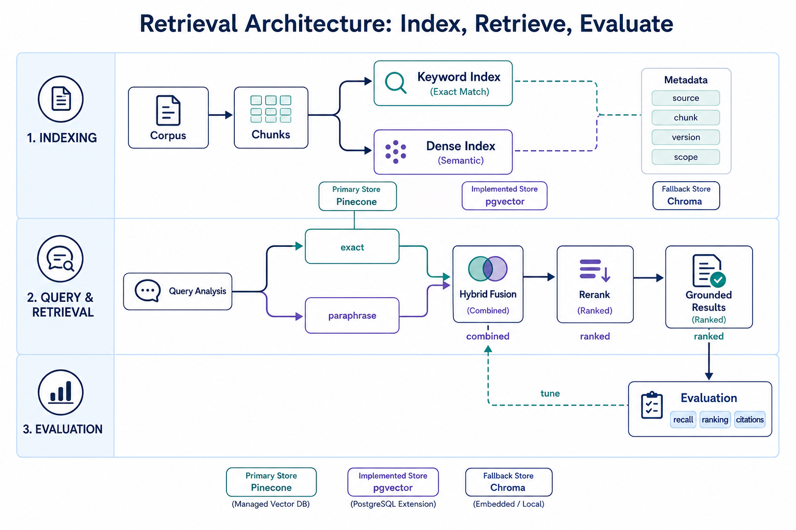
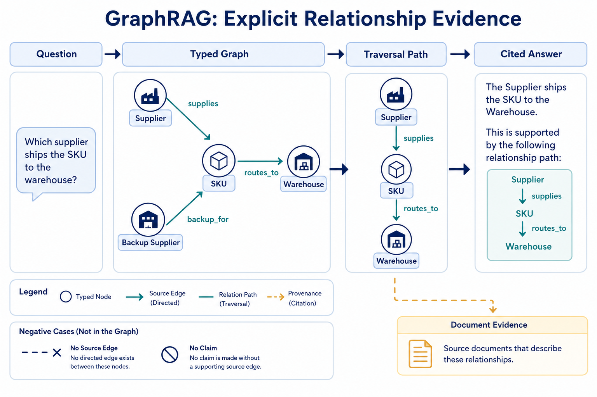
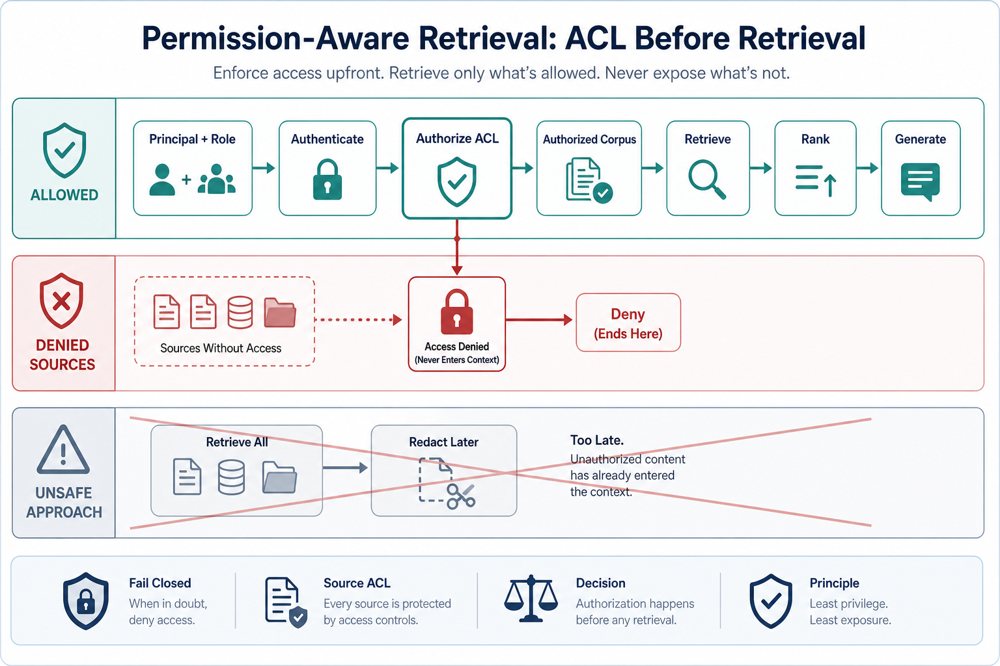
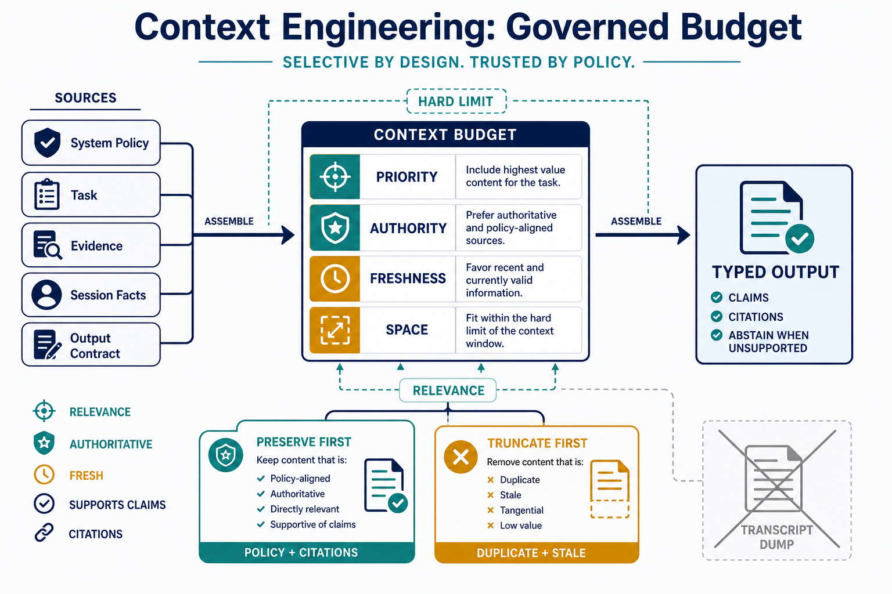
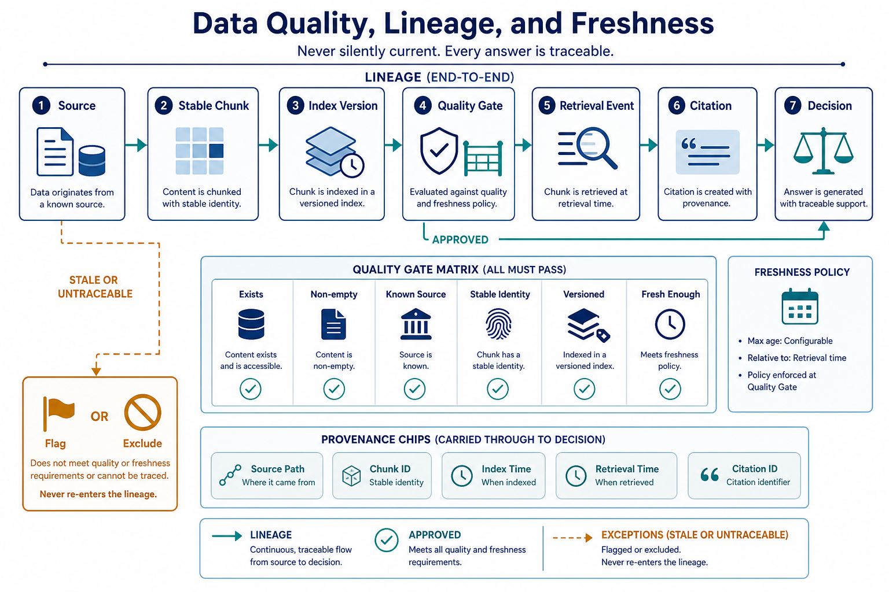

Setup (11:00–11:10)
conda activate ai_agent_env
python -c "import lancedb, networkx; print('lancedb + networkx OK')"
python -c "import sentence_transformers; print('sentence-transformers OK')"Library setup If sentence_transformers import fails
Confirmed missing from ai_agent_env in the pre-course VM check — this is the expected one-time install, not a broken environment.
Install (once per VM)
conda activate ai_agent_env
uv pip install sentence-transformers diskcache
python -c "from sentence_transformers import SentenceTransformer, CrossEncoder; print('ok')"First-run note
The first time you load all-MiniLM-L6-v2 or cross-encoder/ms-marco-MiniLM-L-6-v2, it downloads once (a few hundred MB total) and caches locally — expect a short pause on the very first embed/rerank call today, not every call.
Library setup Why LanceDB and not Pinecone/pgvector/Chroma today
LanceDB is embedded (a local folder, like SQLite) — no server, no account, no network dependency, and it's already installed. Postgres+pgvector and Chroma are also installed and already running as VM services if you want to compare them as a stretch goal, but LanceDB is what every required exercise below uses.
python -c "import lancedb; print(lancedb.__version__)"Topic 01 · From RAG to Agentic RAG
Concept. Plain RAG retrieves once and answers. Agentic RAG treats retrieval as a decision the agent makes as part of its loop: does this question even need retrieval? What should the query actually be? Is what came back good enough, or does it need refining and re-querying? This produces large faithfulness gains over single-pass RAG specifically on multi-step questions, where the first query is rarely the right one.
- Why grading matters as its own step. Retrieval can return results that are topically related but don't actually answer the question — grading is the explicit check for "is this evidence sufficient," separate from "did the search run."
- Re-querying isn't unlimited. Like Day 1's budget guardrail, agentic RAG's re-query loop needs a bound — 1-2 refinement attempts, not an open-ended search.

Build it together, variation A — wire retrieval in as a tool. Claude Code chat panel — build the index first, then give Claude Code the ability to search it:
Run W2D3/snippets/rag_index.py once to build the LanceDB index (it
prints a couple of sample searches). Then build a small MCP tool
search_policies(query: str, k: int) wrapping its search() function, and
register it in .mcp.json. Restart, then ask yourself: "is a burst pipe
covered under my homeowners policy?" using the tool, and give me a cited
answer.Build it together, variation B — force a re-query, for contrast. Ask something the first query phrasing won't match well:
Using search_policies, answer: "if my basement floods after a storm, am I
covered?" First try the query as asked. If the top results don't actually
answer a flood-specific question, refine your search query once (think
about what term the documents actually use) and try again before
answering.Learners repeat. Ask one more coverage question of your choosing and note whether Claude Code retrieved once or needed a re-query — bring your finding to the showcase.
Topic 02 · Retrieval architecture
Concept. Chunking strategy (here: split by ## heading, preserving one coherent idea per chunk) determines what can even be retrieved. Hybrid search combines keyword and semantic matching — semantic alone can miss an exact term match; keyword alone misses paraphrase. A cross-encoder reranker re-scores the top candidates with a slower, more accurate model before you trust the ranking. Metadata filters narrow the candidate set by structured fields (product, jurisdiction, date) independent of semantic similarity.
- Chunk size is a real design decision. Chunking by heading (what
rag_index.pydoes) keeps each chunk coherent and citable — a fixed character-count chunker would sometimes cut a policy clause in half. - Why rerank at all, if the vector search already ranked results. A vector index's distance metric is fast but approximate; a cross-encoder actually reads the query and candidate together and is far more accurate at the final ranking — hence "search broad, then rerank narrow" (
k*3candidates down tokin the reference script).

Instructor drives live, variation A — with reranking. VS Code terminal — run the reference search directly and inspect the order:
uv run python -c "
from W2D3.snippets.rag_index import search
for hit in search('commercial package coverage', k=5):
print(round(hit['rerank_score'],2), hit['source_file'], '::', hit['heading'])
"Instructor drives live, variation B — without reranking, for contrast. Have Claude Code temporarily bypass the rerank step and compare the raw vector order:
In a scratch script, run the same query "commercial package coverage"
through just the LanceDB vector search step from rag_index.py (skip the
reranker entirely) and print the top 5 in raw vector-distance order.
Compare this ordering to the reranked one we just looked at — did the
best chunk move position?Learners repeat. Try a query with an exact term match (e.g. "flood rider") vs. a paraphrased one (e.g. "extra coverage for water from outside") and note whether reranking closes the gap between them.
Topic 03 · GraphRAG & hybrid retrieval
Concept. Some questions aren't answerable from any single document's text — they require following relationships: this claim, at this address, who else filed a claim at that same address? A knowledge graph makes those relationships traversable directly. GraphRAG costs roughly 3-5× a plain vector query, so it's worth reaching for specifically where relationships matter, not as a default.
- What vector search structurally cannot do here. Two claims at the same address, filed by different named people, with no shared vocabulary in their claim text, will never be "similar" by embedding distance — the connection lives in the graph structure, not the text.
- GraphRAG combines both, it doesn't replace vector search. Vector/hybrid search still finds the relevant starting node(s); the graph traversal is what extends reasoning beyond a single document's content.

Run it together, variation A — the multi-hop traversal. VS Code terminal + Claude Code — this is the address-collision fraud signal foreshadowed since Day 1's fraud-tip claim:
uv run python W2D3/snippets/graphrag_traversal.py CLM-424063Then have Claude Code explain what just happened and why it matters:
Read W2D3/snippets/graphrag_traversal.py and data/insurance
/claims_kg.json. Explain, in plain terms, what a "2-hop traversal" means
here, and why a plain search over claim narrative text would never have
found this connection on its own.Run it together, variation B — a claim with no signal, for contrast.
uv run python W2D3/snippets/graphrag_traversal.py CLM-748422CLM-424063 surfaces a genuine multi-hop signal. CLM-748422 correctly returns "no other claims found" — a graph traversal that finds nothing is still a valid, useful result (it rules something out), not a failure. Don't let the room conflate "no hits" with "broken."
Learners repeat — combine with Topic 01's cited answer. Have Claude Code produce one combined answer for CLM-424063 that cites BOTH the vector-retrieved policy grounding (Topic 01) AND the graph-discovered address signal (this topic) — and explicitly flags the claim for special_investigations because of the combined evidence.
Topic 04 · Permission-aware retrieval
Concept. An agent must be constrained to the same data rights as the user it's acting for. The filter has to run before retrieval selects what goes into context — filtering after generation is too late, the model already read the document.
- Default-deny, not default-allow. Start from "nothing is visible" and explicitly grant access, rather than starting from "everything is visible" and trying to remember every exclusion.
- Row-level vs. document-level. Our case is document/product-level (an adjuster for homeowners claims shouldn't necessarily see commercial policy terms) — the same idea also applies at the row level (a customer-facing agent should only see that one customer's own claims).

Build it together, variation A — a role that can see everything relevant. Claude Code chat panel:
Extend search_policies with a role parameter. Define a default-deny
permission matrix: role "claims_adjuster" can see all products; role
"auto_specialist" can see ONLY auto and homeowners products. Apply the
filter as a LanceDB metadata pre-filter (by source_file prefix) BEFORE
the vector search runs, not after. Search "commercial package coverage"
as role "claims_adjuster" and show me the results.Build it together, variation B — a restricted role, for contrast.
Now run the exact same search, "commercial package coverage", as role
"auto_specialist". Show me what comes back, and confirm no commercial
policy content appears anywhere in the candidate set — not just excluded
from the final answer, excluded from retrieval entirely.Learners repeat. Add one more role of your choosing (e.g. "landlord_liability_specialist") with its own allowed-product list, and confirm its searches are correctly scoped.
Topic 05 · Context engineering
Concept. The context window is a real, finite budget. Every retrieved chunk you add is a deliberate spend, not a free win — and every chunk needs its provenance (source file, section) traveling with it, never separated, so a later citation can trace back correctly.
- Defeating lost-in-the-middle here specifically. If you're assembling several chunks into one prompt, the most load-bearing evidence belongs first or last in the assembled context, not buried in the middle — same effect from Day 1, applied to retrieval output this time.

Instructor drives live, variation A — provenance-tagged context. Claude Code chat panel:
Search for evidence on "landlord liability tenant negligence" and assemble
a context block for answering it. For each chunk you include, tag it with
its exact source file and heading directly next to the text, not in a
separate list. Then answer, citing inline.Instructor drives live, variation B — an overflowing budget, for contrast.
Now search for a broad query ("insurance coverage") that returns many
loosely-relevant chunks, and try to include all of them, ranked, with the
single most relevant one placed in the middle of the assembled block
instead of first. Then ask yourself the specific question again and see
whether you still cite the most relevant chunk correctly.Learners repeat. Re-run variation B's same query, but this time place the most relevant chunk first. Note whether the citation improved.
Topic 06 · Data quality, lineage & freshness
Concept. Every chunk in the index should be traceable back to an exact source file and, ideally, a version/checksum of that file at index time. If the source changes after indexing, the index is stale — and a stale or untraceable chunk should gate the answer (refuse or flag), not get used silently as if it were current.
- Checksums make staleness detectable, not just theoretical. Hash each source file at index time; if the live file's hash no longer matches, you know precisely which chunks are now unverified.

Instructor drives live, variation A — build the lineage trace. Claude Code chat panel:
Write a script that computes a SHA-256 checksum for every file under
data/insurance/policies/ and data/logistics/policies/ at index time, and
saves it to a manifest (source_file -> checksum, indexed_at). Then show me
how you'd re-check the manifest against the live files to detect drift.Instructor drives live, variation B — introduce real drift, for contrast. Make a small, real edit to one policy doc (nothing destructive — a one-line clarifying addition), then re-check:
Add one clarifying sentence to the end of POL-HOME-010_water.md (nothing
that changes its meaning). Then re-run the manifest check from variation
A. Confirm it correctly flags that file as changed since indexing, and
tell me what a well-guarded RAG system should do with that claim: keep
serving the old chunk, or block it until re-indexed?Learners repeat. Re-run rag_index.py to actually refresh the index, then re-check the manifest and confirm the drift flag clears.
Showcase (14:30–15:00)
Share one moment: a re-query that changed the answer, a rerank that promoted the right chunk, the address-collision graph signal, a permission filter correctly blocking content, or a caught staleness flag.
Before W2D3 PM
Keep rag_index.py and your permission-aware search_policies tool handy — this afternoon's memory and event-driven topics extend directly from today's retrieval layer.